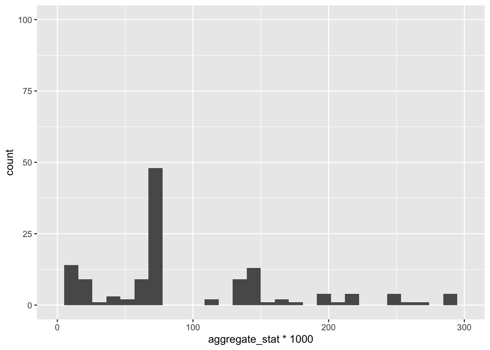

R.methodsS3 v1.8.2 (2022-06-13 22:00:14 UTC) successfully loaded. See ?R.methodsS3 for help.
R.oo v1.27.0 (2024-11-01 18:00:02 UTC) successfully loaded. See ?R.oo for help.
Attaching package: 'R.oo'
The following object is masked from 'package:R.methodsS3':
throw
The following objects are masked from 'package:methods':
getClasses, getMethods
The following objects are masked from 'package:base':
attach, detach, load, save
R.utils v2.12.3 (2023-11-18 01:00:02 UTC) successfully loaded. See ?R.utils for help.
Attaching package: 'R.utils'
The following object is masked from 'package:utils':
timestamp
The following objects are masked from 'package:base':
cat, commandArgs, getOption, isOpen, nullfile, parse, use, warnings
library(readr)library(ggplot2)library(tidyr)
Attaching package: 'tidyr'
The following object is masked from 'package:R.utils':
extract
library(dplyr)
Attaching package: 'dplyr'
The following objects are masked from 'package:stats':
filter, lag
The following objects are masked from 'package:base':
intersect, setdiff, setequal, union
library(stringr)
#create location to save the data filesstorm_data <-"storm_events_csvs"if(!dir.exists(storm_data)){dir.create(storm_data)}#write a function to download and unzip csv filedownload_and_unzip <-function(url) {tryCatch({#extract proper file name filename <-basename(url) destfile <-file.path(storm_data, filename)#download the file response <-GET(url, write_disk(destfile, overwrite =TRUE))if (status_code(response) ==200) {message("Downloaded: ", filename)#check if the file is a .gz and unzipif (grepl("\\.gz$", filename)) { decompressed_file <-sub("\\.gz$", "", destfile)gunzip(destfile, destname = decompressed_file, overwrite =TRUE)message("Decompressed: ", decompressed_file) } } else {message("Failed to download: ", url) } }, error =function(e) {message("Error downloading ", url, ": ", e$message) })}#define the base url site and specific files we want to downloadbase_url <-"https://www.ncei.noaa.gov/pub/data/swdi/stormevents/csvfiles/"files_to_download <-c("StormEvents_details-ftp_v1.0_d2008_c20240620.csv.gz","StormEvents_details-ftp_v1.0_d2013_c20230118.csv.gz","StormEvents_details-ftp_v1.0_d2018_c20240716.csv.gz")urls <-paste0(base_url, files_to_download)#use map from purrr to download the filesmap(urls, download_and_unzip)
#read csv files and make data framesread_csvs <-function(directory) {tryCatch({#list the csv files available csv_files <-list.files(directory, pattern ="\\.csv$", full.names =TRUE)#read in files and make into data framewalk(csv_files, function(file) {#create variable name to make dataframe data_frame_name <-make.names(gsub("\\.csv$", "", basename(file)))assign(data_frame_name, read_csv(file, col_types =cols()), envir = .GlobalEnv)message("Data frame created: ", data_frame_name) }) }, error =function(e) {message("Error reading CSV files: ", e$message) })}#try read function functionread_csvs(storm_data)
Data frame created: StormEvents_details.ftp_v1.0_d2008_c20240620
Warning: One or more parsing issues, call `problems()` on your data frame for details,
e.g.:
dat <- vroom(...)
problems(dat)
Data frame created: StormEvents_details.ftp_v1.0_d2013_c20230118
Data frame created: StormEvents_details.ftp_v1.0_d2018_c20240716
`stat_bin()` using `bins = 30`. Pick better value with `binwidth`.
Warning: Removed 44 rows containing non-finite outside the scale range (`stat_bin()`).
Removed 2 rows containing missing values or values outside the scale range
(`geom_bar()`).
`stat_bin()` using `bins = 30`. Pick better value with `binwidth`.
Warning: Removed 16 rows containing non-finite outside the scale range (`stat_bin()`).
Removed 2 rows containing missing values or values outside the scale range
(`geom_bar()`).

# For scaled statggplot(ML_eight, aes(scaled_aggregate)) +geom_histogram()
`stat_bin()` using `bins = 30`. Pick better value with `binwidth`.